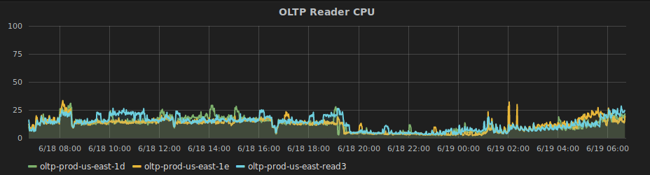
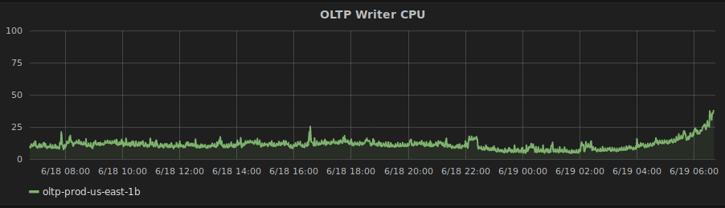
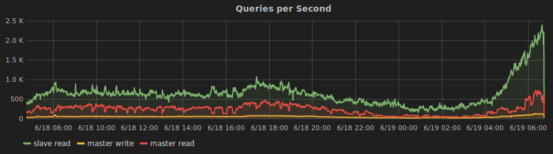

# Scalability, Reliability, and Performance at ZipRecruiter Hi I'm fREW --- # Agenda * Ask questions at any time; please remind me to repeat * General Terms * Strategies * Tactics * Specifically at ZR --- # Quick Caveat No right answers > "You can prematurely optimize maintainability, flexibility, security & > robustness just like you can performance." — John Carmack --- # Defining our Terms --- ## Scalability - Resource Saturation * Using 1% of all server resources but cannot get more servers -- * 100x * CPU, Memory, Disk, Bandwidth * turnkey systems * ≈ performance -- * Using 100% of all server resources but can get unlimited servers -- * Could scale infinitely * (beware spherical chickens, measure everything) -- * Strategies → Tactics * increase total resources → more web workers * decrease usage → stop being wasteful, use cperl --- ## Reliability - Error percentage -- * Strategies → Tactics * Robustness to errors → tests, timeouts, retries (IIS anecdote) * Be perfect → (just kidding, bad advice) --- ## Performance - Maximum rate -- * 1k req per second * 30k queries per second -- * Strategies → Tactics * Trade some perf for scalability → eg MapReduce * Don't do it * Do it, but don't do it again * Do it less * Do it later * Do it when they're not looking * Do it concurrently * Do it cheaper * ([source](http://www.brendangregg.com/methodology.html)) --- ## FYI... Scalability required for business growth! --- # @ ZipRecruiter --- ## Capacity Caches * 1 req/s; add cache; 1000 req/s * "NOW WE CAN SERVE 1000x THE USERS!" -- * ... time passes ... -- * ... cache gets blown ... -- * outage -- * more likely than above secenario because delta is less and growth is gradual -- * (hopefully) Balanced solution at Zip * Latency Caches (faster!) 👍 * Capacity Caches (can even) 👎 -- * ES example --- ## Timeouts / Reapers * "SendGrid is always fast!" -- * "DynamoDB is always fast!" -- * "S3 is always fast!" -- * EVERYTHING NEEDS A TIMEOUT -- * Reaper (+ MySQL) as a stopgap (h/t Hopkins) -- * [more](https://blog.afoolishmanifesto.com/posts/reap-slow-and-bloated-plack-workers/) [here](https://blog.afoolishmanifesto.com/posts/put-mysql-in-timeout/) --- ## Aurora * CPU bound vs IO bound * Easily add read followers * MySQL on AWS had hard max IO not far above our avg use -- * Capacity Cache Lulz --- ## Aurora  --- ## Aurora  --- ## RWSplitter * "FreakyFriday" (h/t Cogg, Deltac)  --- ## Table Refactor * "quiz.description" --- ## Performance Monitoring * Graphite / Grafana -- * AccessLog -- * sql_count / sql_time -- * dynamodb_count / dynamodb_time * Helped reduce queries -- * [more](https://blog.afoolishmanifesto.com/posts/linux-clocks/) --- ## Memory Work * [Reaper now involved in memory usage](https://blog.afoolishmanifesto.com/posts/reap-slow-and-bloated-plack-workers/) * Iterate instead of pulling everything into memory * Not easy --- ## nginx vs Apache * Buffering vs Streaming * Huge win * Mobile (60%) Ransom --- ## Bakeoff --- # What's Next @ ZipRecruiter? * Memory usage in perl is still very high * CPU usage is mysteriously high --- # The End * Check out the SRE book by The Borg ---